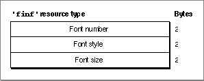

The Font Information Resource
The Dialog Manager uses the default application font when it displays the static text items in your control panel. To specify a different font, create a font information resource of type'finf'. A font information resource must have a resource ID of -4049. This is an optional resource for control panels. Figure 8-18 shows the structure of a compiled font information resource.Figure 8-18 Structure of a compiled font information (
'finf') resource
A font information resource contains three 2-byte words. A compiled version of a rectangle positions resource contains these elements:For more information about the font information resource, see"Specifying the Font of Text in a Control Panel" on page 8-23.
- Font ID number. The Finder sets the graphics port's
txFontfield to this value.- Font style. The Finder sets the graphics port's
txFacefield to this style.- Font size. The Finder sets the graphics port's
txSizefield to this size.
- Note
- The Control Panel desk accessory in System 6 does not support font information resources. If your control panel can run in System 6 and you want to specify a different font, see "Defining Text in a Control Panel as User Items" on page 8-24.